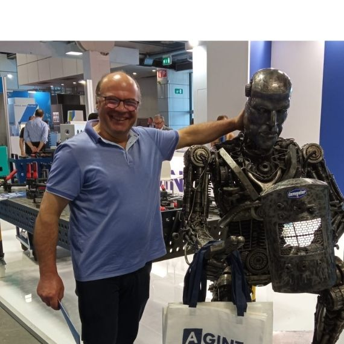

x
I
N
D
U
S
T
O
Chi Siamo
Le nostre piccole soddisfazioni
Cresciuti Grazie agli Agricoltori
+
Anni di Esperienza
+
Macchine Vendute
+
Clienti Soddisfatti

storia
Dal 1995 nelle Murge
Una Storia di Passione
e Dedizione
Tutto è iniziato quasi per caso, quando Giuseppe Tinelli
cominciò a fare qualche lavoretto per gli agricoltori suoi
vicini di casa. Dopo due anni di apprendimento in una
piccola officina a Noci, decise di mettersi in proprio,
costruendo blocco dopo blocco il suo laboratorio con le
proprie mani.
Nel 1995 nasce ufficialmente L'Agrimeccanica, frutto di
passione e voglia di aiutare lo sviluppo dell'agricoltura -
il motore fondamentale di ogni economia. Nel 2003, dopo una
pausa di due anni per il trasferimento, l'azienda si espande
a Cisternino con un grande magazzino, un capannone pieno di
attrezzature e macchinari industriali, e un nuovo
laboratorio all'avanguardia.
Il Nostro Motto
"Il cliente deve parlare per te" - Giuseppe Tinelli. Un
perfezionista che crede nella qualità, nella pazienza e
nella crescita delle persone che si affidano a lui per
migliorare e innovare le loro aziende agricole.
I Nostri Valori
Cosa Ci Rende Unici
Trent'anni di esperienza ci hanno insegnato che il successo si
costruisce su fondamenta solide.
Qualità artigianale, dedizione al cliente e passione per l'agricoltura sono i pilastri della nostra azienda.
Qualità artigianale, dedizione al cliente e passione per l'agricoltura sono i pilastri della nostra azienda.

Qualità Artigianale
Ogni macchina è costruita con cura maniacale. Giuseppe
Tinelli, perfezionista per natura, supervisiona
personalmente ogni fase della produzione per garantire
standard elevati. La qualità non è un optional, è la nostra
firma.
Scopri i Prodotti
Il Cliente al Centro
"Il cliente deve parlare per te" - questo è il nostro motto.
Non ci siamo mai pubblicizzati se non attraverso il
passaparola e la soddisfazione di chi lavora con le nostre
macchine. La fiducia si guadagna sul campo, giorno dopo
giorno.
Contattaci
Crescita Condivisa
Crediamo nella crescita delle aziende agricole che si
affidano a noi. Supportiamo l'innovazione e il miglioramento
continuo, perché l'agricoltura è il motore fondamentale di
ogni economia. Il vostro successo è il nostro successo.
I Nostri Servizi
Testimonianze
Cosa Dicono i Nostri
Clienti
Avevo provato la GT-400 da un mio vicino e mi sono innamorato
di come lavorava. Sono venuto qui e Giuseppe mi ha saputo dare
conferma sulla qualità straordinaria dell'attrezzo. Inoltre il
macchinario ha tutte le certificazioni del caso che mi ha
permesso di abbatterne in parte il costo tramite un
finanziamento. Tre anni dopo e non ho mai avuto un problema.
La mia vecchia seminatrice snon lavorava bene nel mio terreno
e spesso il gambale si ostruiva. Cosi sono andato da
L'Agrimeccanica e Giuseppe mi ha mostrato come il suo attrezzo
risolveva i miei problemi. Mi ha consigliato la GT-250. Aveva
ragione: Grazie al suo sistema di erpice incorporato ora non
ho più intoppi nella semina Dopo due anni sono tornato per
acquistare anche l'erpice.
Avevo bisogno di un erpice solido e robusto per coltivare il
mio terreno. Da L'Agrimeccanica ho trovato macchine solide,
costruite bene e semplici da usare. Giuseppe non ti vende e
basta, prima vuole capire cosa ti serve davvero. Il GTE-330
con spondine idrauliche è perfetto per il mio lavoro.
Sono venuto per un erpice e Giuseppe mi ha fatto domande che
nemmeno altri venditori facevano: quanto terreno lavoro, che
tipo di suolo, quali problemi avevo prima. Mi ha spiegato bene
il funzionamento della sua macchina e di come poteva aiutarmi
a lavorare con serenità.
Qualche anno fa ho visto il mio vicino con una seminatrice
L'agrimeccanica. Ho visto subito la differenza di raccolto tra
una seminatrice a righe e una a spaglio. Quando sono andato da
Giuseppe gli ho detto cosa cercavo, lui mi ha chiesto come
lavoravo prima e cosa non mi convinceva. Semplice, diretto,
professionale.
Prima seminatrice nel 2017, poi sono tornato per l'erpice nel
2020 e l'anno scorso per il rullo. Giuseppe sa cosa ti serve
ancora prima che tu glielo dica. Ti fa le domande giuste,
capisce i tuoi problemi e ti consiglia bene. Attrezzature
semplici, robuste e che durano. Consigliatissimo.